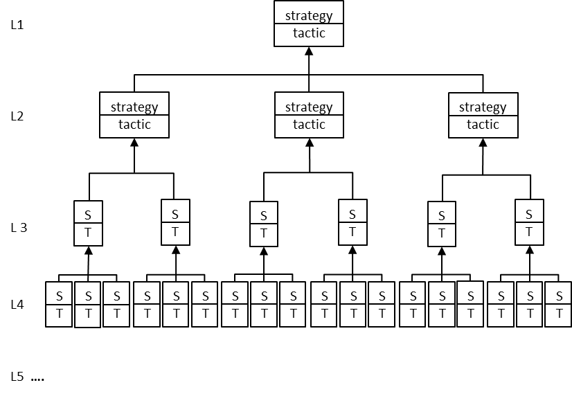

дерево стратегии и тактики (strategy and tactics tree)
дерево стратегии и тактики (strategy and tactics tree) - (СТ-дерево)
1. Мыслительный процесс (логическое дерево) для определения и сообщения всех необходимых и достаточных изменений, необходимых для синхронизации действий для достижения любой амбициозной цели (или достижения большего количества целевых единиц), а также как последовательность выполнения (слева направо и снизу вверх).
2. Иерархическая структура, направляющая процессы, необходимые для проведения целостных запланированных изменений в организации, чтобы превратить ее в постоянно процветающую организацию, сосредоточив внимание на вопросах, что изменить, на что изменить и как вызвать изменение, с акцентом на третий вопрос.
Использование: СТ-дерево можно построить, используя мыслительные процессы или процесс согласия «плюс-плюс».
-
СТ-дерево — это органайзер всех знаний, полученных в результате анализа организации с использованием других мыслительных процессов. Логическая структура СТ-дерева направляет организаторский фокус — начиная с самой высокой цели, СТ-дерево логически определяет, какие действия должны быть предприняты в каком порядке на всех уровнях организации.
-
СТ-дерево представляет собой дорожную карту для создания, капитализации и поддержания решающего конкурентного преимущества.
-
СТ-дерево обеспечивает не только необходимые и достаточные условия для реализации стратегии, но также определяет конкретные изменения в фокусе, измерениях, процессах, политике и поведении, необходимые на каждом уровне и в каждой функции организации.
Пример. На приведенной ниже диаграмме представлена общая структура СТ-дерева.
-
Стратегия уровня 1 (L1) определяет изменения в мерах и фокусах, которые должны произойти для генерального директора.
-
Тактика L1 определяет изменение способов поведения и правил для генерального директора.
-
Стратегии и тактики уровня 2 решают одни и те же проблемы для вице-президентов и директоров.
-
Стратегии и тактики уровня 3 предназначены для функциональных менеджеров, а стратегии и тактики уровня 4 — для сотрудников.
СТ-деревья могут содержать уровень 5, который предоставляет более подробную информацию о последовательности и действиях.

См.: предположение необходимости, параллельное предположение, стратегия, узел стратегии и тактики,предположение достаточности, тактика.
#дст
Синоним: strategy and tactics tree